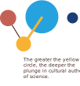

Religion
Globally, 20% of respondents see a conflict between religious and scientific teachings and 11% of the population would choose religion over science.
Where might people turn when there is a difference of opinion between religion and science?
According to WGM 2018, People who live in LMIC countries are more likely to identify as religious as compared to the rest of the world. 66% of them report an uncomplicated side-by-side relationship of faith in religion and science. When the two schools of thought disagree - 64% of them create a hierarchy, elevating religion over science.
In an effort to gain an insight into the extent to which religiosity impacts cultural authority of science - we integrated the responses from three questions in the WGM.1
1. D1 Would you tell me what your religion is?
Q12 In general, would you say that you trust science a lot, some, not much, or not at all?
Q30 Generally speaking, when science disagrees with the teachings of your religion, what do you believe? Science or the teachings of your religion?

Religion and traditions co-exist with scientific authority in everyday life in LMIC countries.
Low Income
Lower Middle Income
Upper Middle Income
High Income

Most religious people globally and in LMIC countries report an uncomplicated side-by-side relationship of faith in religion and science.
This uncomplicated relationship has also been reported by Falade’s research on cognitive polyphasia, cognitive dissonance and attitudes to science in Nigeria.2
Low Income
Lower Middle Income
Upper Middle Income
High Income
2. Falade, B. A., & Bauer, M. W. (2018). ‘I have faith in science and in God’: Common sense, cognitive polyphasia and attitudes to science in Nigeria. Public Understanding of Science, 27(1), 29-46.
Photograph: Suruchi Maira
Case Study
How a person in India who received both traditional and scientific medicine treatments
“The medication (for jaundice) was available, my parents first took me to a doctor but apart from a doctor, my grandmother and grandfather had some superstitious belief, and they used to take me to a person who would apply something yellow on my body and remove it, he used to do this daily. I don’t know whether I got cured due to medication or because of the superstitious belief”
3. Fact and Story. Voices from the Public, 2018
Photograph: Bill Wegener on Unsplash
Case Study
How an uncomplicated relationship lead to a positive cross-referral system for mental health in Ghana
The health-care system supporting mental health in Ghana appears to have evolved into a collaboration between Western clinicians and traditional African and Western religious healers. These interactions consist of a ‘cross-referral system’, which is, however, largely unofficial.4 A pastor told the Ae-Ngibise et al. (2010) that he normally referred his patients to the hospital first, before asking them to fast and pray. A Muslim healer also said that he referred patients to the hospital if he had tried all other possible methods and the ailment persisted. In addition, a health programme director reported the need for a relationship between clinicians and faith-based healers, since he had seen successful management in cases in which the church encouraged patients.5
4. Gyasi, R. M., Mensah, C. M., Osei-Wusu Adjei, P., & Agyemang, S. (2011). Public perceptions of the role of traditional medicine in the health care delivery system in Ghana.
5. Ae-Ngibise, K., Cooper, S., Adiibokah, E., Akpalu, B., Lund, C., Doku, V., & Mhapp Research Programme Consortium. (2010). ‘Whether you like it or not people with mental problems are going to go to them’: A qualitative exploration into the widespread use of traditional and faith healers in the provision of mental health care in Ghana. International review of psychiatry, 22(6), 558-567.

If there is a disagreement in beliefs in LMICs, 13% of the population pick religion over science
Low Income
Lower Middle Income
Upper Middle Income
High Income
Photograph: UNMEER / Flickr
This results in a plunge in the authority of science.

This results in a plunge in the authority of science.
Respondents in Kenya are most likely of our focus countries to create a hierarchy, elevating religion over science when the two schools of thought disagree (27% of the population have high trust in science, but will side with religion over science).
Low Income
Lower Middle Income
Upper Middle Income
High Income
This plunge in cultural authority of science can either last several years (as seen in Nigeria) or can be addressed quickly by working with religious leaders (as seen in West Africa)
Photograph: Louie Rosencrans/CDC
Case Study
How coexistence leading to negative long-term outcomes during the Oral Polio Vaccination campaigns in Nigeria
In northern Nigeria in 2003, the political and religious leaders of Kano, Zamfara, and Kaduna states brought the immunization campaign to a halt by calling on parents not to allow their children to be immunized. These leaders argued that the vaccine could be contaminated with antifertility agents (estradiol hormone), HIV, and cancerous agents. This impasse was eventually resolved in July 2004 through dialogue, with religious leaders playing a significant role in the process.
In September 2006, the WHO Regional Committee for Africa stated that “the number of confirmed polio cases in northern Nigeria more than doubled in the first five months of 2006 as compared to the same period in 2005” and that in 2006 Nigeria accounted for over 80% of the global polio burden”.6
6. Jegede, A. S. (2007). What led to the Nigerian boycott of the polio vaccination campaign?. PLoS Med, 4(3), e73.
Photograph: Morgana Wingard/Flickr
Case Study
How the cultural authority of science plunged and then was empowered by religion during the Ebola virus disease epidemic in West Africa
At the beginning of the Ebola outbreak, pastors were laying their hands on the sick to cure them of ‘spiritual attacks’. A leader told pastors that all those who fasted for 100 days should have no fear of Ebola but that they should avoid laying their hands on the sick. The traditional practices of sitting on mats to mourn the dead and washing their bodies by Bassonians, Kru and Grebo people brought the uninfected into contact with the virus.
Subsequently, Many churches ordered the suspension of the practice of shaking hands as a sign of peace and the serving of Holy Communion directly to the mouth. There were also calls for the suspension of traditional practices of mourning the dead. Churches became a source of medical aid and health communication.7
7. Falade, B. (2019). Religious and traditional belief systems coexist and compete with science for cultural authority in West Africa. Cultures of Science, 2(1), 9-22.
Globally, Followers of Christianity and Judaism have the highest rates of saying they would pick religion over science in case of a disagreement between religion and science.8
In the nine focus countries, Christian majority countries (Kenya, South Africa and Malawi) have the highest proportion of the population saying they would pick religion over science in case of a disagreement between religion and science.
8. Gallup: World Poll 2018.
Religiosity affects health behaviours not just in cases of disagreement but also while communicating everyday health information - countries which have a high number of people following religious teachings that are in conflict with science also have less trust in medical and health advice from health workers (0.46 correlation).
High Income
Upper Middle Income
Lower Middle Income
Low Income
Q22 In general, how much do you trust medical and health advice from medical workers, such as doctors and nurses, in this country? A lot, some, not much, or not at all?
Q30 Generally speaking, when science disagrees with the teachings of your religion, what do you believe? Science or the teachings of your religion?
Key Takeway
The association between religiosity and perception of cultural authority of science is complex and shaped by multiple contextual forces. Non-scientific knowledge and actors, traditional and religious practices, rumours and conspiracy theories must all be factored into health communications and while planning for interventions.
Opportunity
How might science work with - rather than in isolation from - religious leaders to ensure that the cultural authority of science is maintained during events?
The Lens of
Religion
Where might people turn when there is a difference of opinion between religion and science?
Religion and traditions co-exist across the world. In case of disagreement between the two belief systems — people switch sides — plunging the cultural authority of science. Use this lens to help estimate the probability of a “plunge” in the authority of science, which could take place in a country when people are faced with factors such as unfamiliar science, controversies or epidemics.
